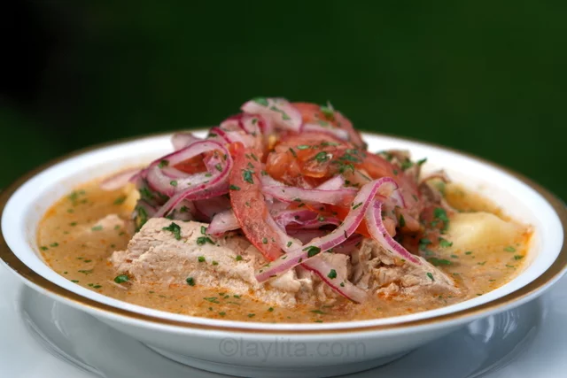

Encebollado

El encebollado de pescado es una sopa típica ecuatoriana, de la región costeña. Esta deliciosa receta se prepara con albacora o atún fresco, yuca,
cebolla, tomate, cilantro, y condimentos. Se sirve con una buena porción de curtido de cebolla y tomate encima de la sopa. En algunos lugares también
lo sirven con guarniciones como chifles, canguil, maíz tostado, y ají o salsa picante al gusto.
Ingredientes para la preparacion:
- 2 libras de atún fresco
- 1 libra de yuca fresca o congelada
- 2 cucharadas de aceite
- 2 tomates picados
- Media cebolla picada
- 1 cucharadita de aji no picante en polvo se puede usar pimentón molido
- 2 cucharaditas de comino molido
- 8 tazas de agua
- 5 ramitas de cilantro o culantro
- Sal al gusto
Preparacion:
- Prepare un refrito con la cebolla, el tomate, al comino, el aji y la sal.
- Añada el agua y las ramitas de cilantro.
- Añada el atún cuando el agua empiece a hervir, cocine hasta que el atún esté listo, aproximadamente unos 15 minutos.
- Cierna el caldo donde se cocinó el agua y guárdelo para cocinar la yuca.
- Separe el atún en lonjas, guarde para añadir más tarde.
- Haga hervir el caldo de atún y añada las yucas, cocine hasta que estén suaves.
- Saque las yucas y córtelos en pedazos pequeños.
- Vuelva a poner las yucas picadas y las lonjas de atún en el caldo, rectifique la sal y caliente hasta que esté listo para servir. Para darle más sabor, también se puede preparar una porción adicional de refrito y licuarlo con un poco del caldo, e incorporar esta mezcla a la sopa.
- Para servir el encebollado de pescado se pone una buena porción del curtido de cebolla y tomate encima de cada plato de sopa.
Notas:
Puede preparar variaciones del encebollado mixto con camarones y otros mariscos. Se pueden agregar una variedad de hierbas diferentes para preparar el caldo, pero el culantro o cilantro es el principal. Tiene un sabor delicioso, es caliente y refrescante a la vez, pero la preparación es muy sencilla y fácil. El encebollado se puede comer para el desayuno, almuerzo o cena. Al igual que algunos otros platos típicos ecuatorianos es perfecto para el chuchaqui o la resaca. En el siguiente video veremos como se prepara esta receta. Teniendo variaciones dependiendo la region en la que nos encontremos.